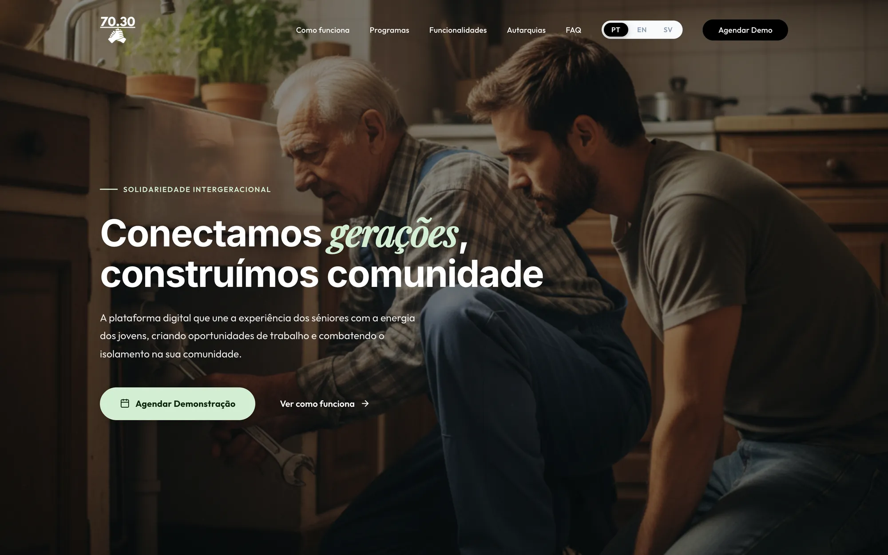
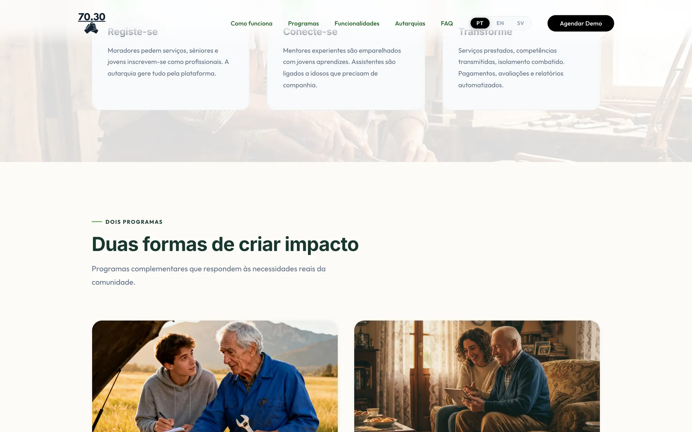
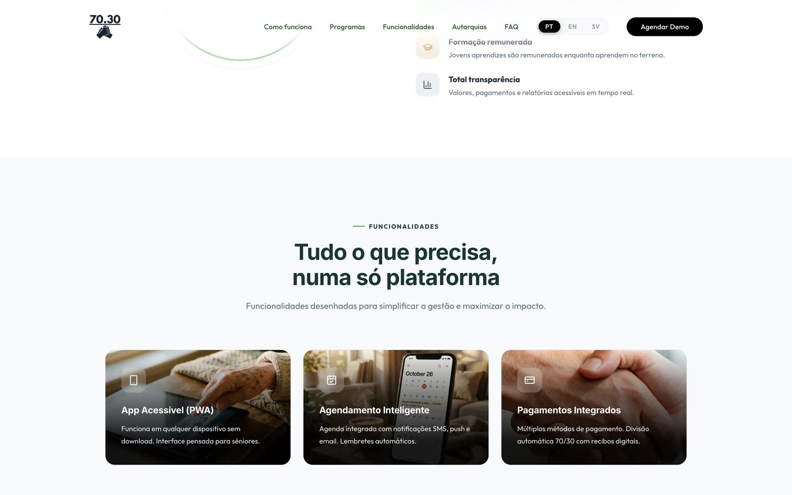
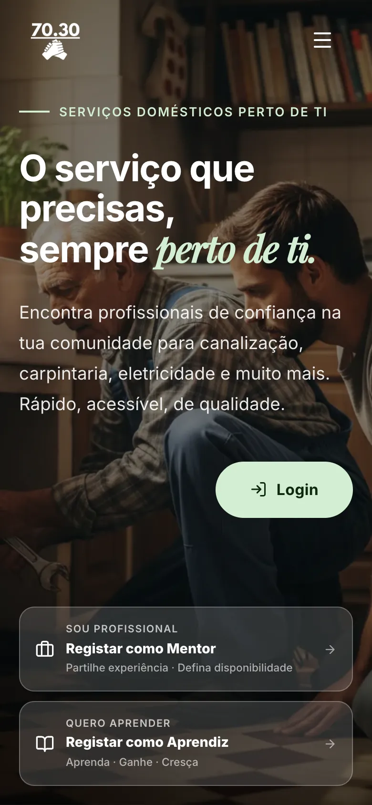
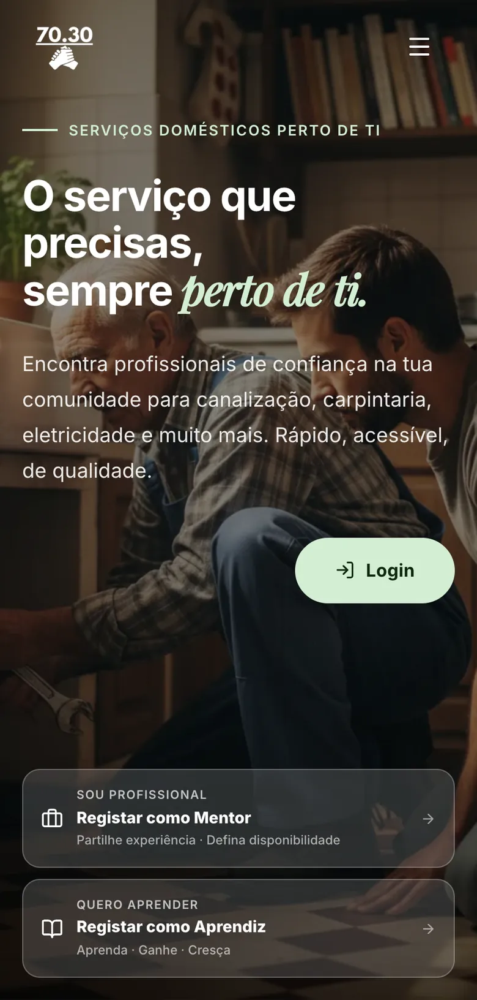
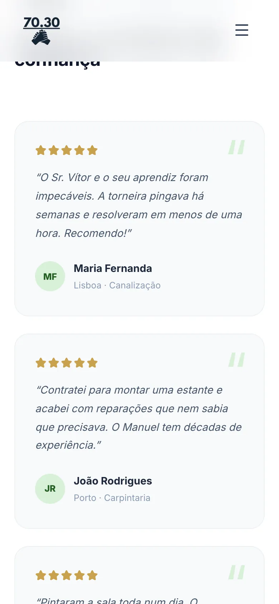

70/30
Uma plataforma digital que reativa profissionais reformados de ofícios e os conecta a jovens aprendizes, promovendo a transferência intergeracional de conhecimento e a inclusão digital.

O nome reflete o modelo de remuneração: 70% para o mentor reformado e 30% para o jovem aprendiz — o equilíbrio entre experiência e inovação.
A plataforma responde ao isolamento de idosos, à escassez de mão de obra especializada e à perda de técnicas tradicionais.
Registo simplificado para reformados, jovens e clientes; publicação e pesquisa de serviços; agendamento e gestão de pedidos; pagamentos seguros. Com módulos de formação digital e uma mentoria que funciona nos dois sentidos.





- 70%para o mentor reformado
- 30%para o jovem aprendiz
- 2produtos: website e app
Próximo projeto — 01
Alice in Brewland